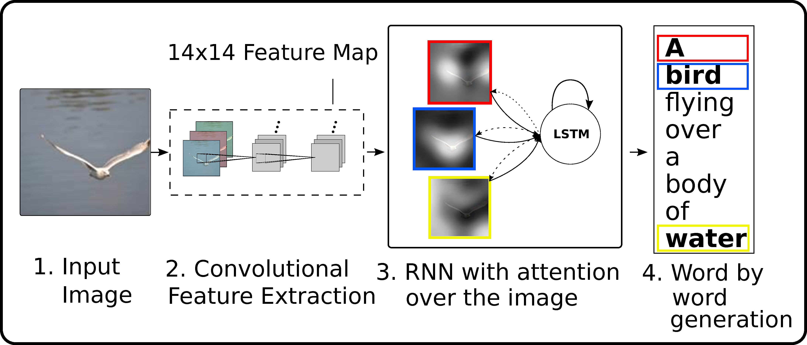

|
Kelvin Xu
I am a second year master student in the MILA lab at the Université de
Montréal studying machine learning (deep
learning in particular) under the supervision of Prof. Yoshua
Bengio/ Aaron
Courville. I did my undergraduate in the Engineering
Science Program at the University of
Toronto. I did my senior year thesis in the machine learning
group where I was very fortunate to work with Prof.
Richard Zemel. |
|
| Publications |

|
A Controller-Recognizer Framework: How necessary is recognition for control? |
|
On Using Monolingual Corpora in Neural Machine Translation |
|
|  |
Show, Attend and Tell: Neural Image Caption Generation with Visual Attention |
|
|